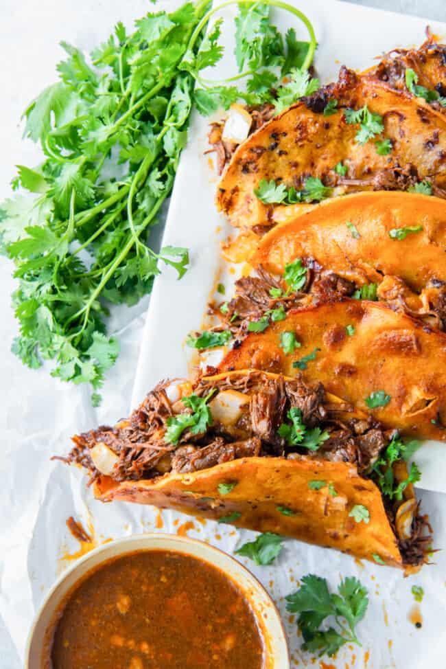

Birria Tacos
Description
Have you ever wanted to have authentic, messy, delicious Mexican street tacos? Well look no further! These birria tacos will be the star of any fiesta!
Tacos de birria are a popular style of tacos in Mexico. Birria is a chuck roast stew braised in a variety of chiles and herbs and stock that goes perfectly with cheese, cilantro, onions, and, of course, a tortilla!

Ingredients
For the Stewed Meat
- 6 dried guajillo chiles (stemmed and deseeded)
- 4 dried ancho chiles (stemmed and deseeded)
- 3 lbs chuck roast (cut into 4 chunks)
- Kosher salt (to taste)
- Ground black pepper (to taste)
- 2 Tbsp vegetable oil
- 3 tomatoes (quartered)
- 1 white onion (quartered)
- 8 cloves garlic (peeled and smashed)
- 4 cups low sodium beef broth
- 1½ lbs bone-in short ribs
- 1 Tbsp ground coriander
- 2 tsp ground cumin
- 2 tsp dried oregano
- 1 tsp chili powder
- 1 cinnamon stick
- ½ cup orange juice
- ½ cup apple cider vinegar
For the Tacos
- 15 corn tortillas
- 2 cups shredded Monterey Jack cheese
- 1 cup chopped yellow onion
- ½ cup fresh cilantro
- Fresh lime wedges
Steps
For the Stewed Meat
- Place the Guajillo and Ancho chiles in a bowl full of near-boiling water. Allow the peppers to soak for at least 30 minutes.
- Heat 1 tablespoon of oil in a large Dutch oven set over medium-high heat. In 2 batches, sear the roast on all sides, using more oil as needed. Transfer the seared chuck roast to a plate and set aside.
- Add the remaining oil, tomatoes, onion, and garlic to the pot. Cook for 2-3 minutes.
- Pour in the beef broth to deglaze the pot.
- Transfer the hydrated chiles from the bowl of water to the pot. Add the short ribs, spices, and cinnamon stick. Bring the mixture to a boil, reduce the heat, and maintain a gentle simmer for 30 minutes.
- Remove the short ribs and add to the plate with the seared roast. Skim the top of the pot to remove any impurities from the bone cooking out. Remove the cinnamon stick and discard. Transfer about 1½ - 2 cups of the braising liquid to a bowl. Cover the bowl and refrigerate.
- Use an immersion blender to blend the remaining pepper and tomato mixture until smooth.
- Return the short ribs, seared beef, and any juices back to the Dutch oven. Add the orange juice, apple cider vinegar, salt, and pepper to taste. Bring to a simmer, cover, reduce heat to medium-low, and cook for at least 3-4 hours.
- When the beef is cooked through, remove the short rib bones. Shred the meat with 2 forks.
For the Tacos
- Remove the reserved braising liquid from the refrigerator. Working 1 tortilla at a time, dip the tortilla in the reserved liquid. Place the tortilla on a large skillet set over medium heat.
- Top half of the tortilla with 1-2 tablespoons of shredded cheese, 2-3 tablespoons of shredded beef, and a sprinkle of onion and cilantro. Fold the tortilla in half to close.
- Cook the tacos for 30-45 seconds on each side until crisp. Transfer to a serving platter and squeeze fresh lime juice over the top.
- Repeat with the remaining tortillas and serve with any remaining braising liquid on the side for dipping.